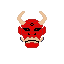

As estatísticas apresentadas representam apenas a capital de cada reino, veja o mapa para mais especificidades de cada reino
| Nivel | Tecnologia |
|---|---|
| 0 | Sem tecnologia, provavelmente vivem em cabanas de barro |
| 1 | Tecnologia bem antiga, ferramentas de metal e cabanas de madeira |
| 2 | Ainda é tecnologia antiga, mas com apoio de magia, possivelmente de nivel baixo ou médio |
| 3 | Tecnologia de nivel da idade média, ou mais baixa, mas com ajuda de magia mais poderosa |
| 4 | Tecnologia de nivel final do século 18, ou mais medieval, mas com alta magia |
| 5 | Tecnologia do inicio do século 20, com rádios e veiculos sendo mais comuns em grandes cidades, sociedades basedas em Alta Magia também tem esse nivel, mesmo com menos tecnologia. |

Terra dominada pelos Hobgoblins, estão em guerra com o shogunato por domínio da região
É a Capital e montanha fortaleza dos anões, também a é maior jazida de Mithral de Rhaokar, a montanha tem 13 níveis acima do Solo e outros 7 abaixo dele, com o 7º sendo a Jazida de Mithral.
Além dos Kobolds, aqui também é território dos Orcs das Montanhas, que sempre foram o braço armado de Ashardaron
Com a Morte do Senhor Vermelho, era esperado que eles fossem se desorganizar ou que as cordilheiras se tornariam um estado de sem leis, mas Ug'har Mãos-de-Pedra, herdou parte da Centelha de ashardaron e manteve a ordem
A Tradição de levar os impostos ao Dragão continua, com todos os cidadãos doando, uma vez por ano, um objeto de ouro, que é levado ao palácio.
As montanhas ainda estão entre os reinos mais seguros.
Ainda sim, é um dos reinos mais livres, com poucas restrições a seus cidadãos, sejam humanos ou monstros.
Muitos dos Dragões das cordilheiras e mesmo de outros lugares, vieram para a cidade, onde podem viver sem serem importunados por aventureiros.
Os Draconatos, antes surgidos por meio de um ritual a Bahamut, se tornaram uma espécie e a segunda espécie dominante do reino.
Kaareth também é extremamente burocrático, sendo necessárias diversas licenças para muitas das atividades corriqueiras